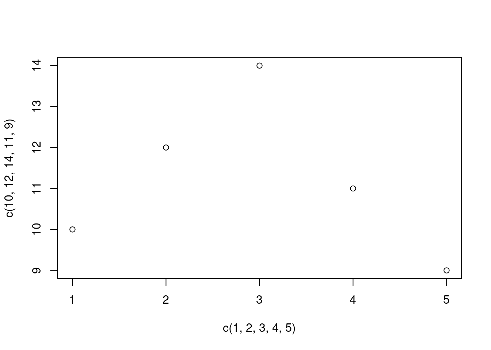

According to (Cortez, et al), the student performance dataset was collected to develop a method of predicting student achievement and if possible identify the key variables that affect their educational success or failure. The dataset was collected from two Portuguese secondary schools by two different methods; using existing reports containing student marks and conducting questionnaires. The questionnaire was meant to complement the student mark report which contained scare information such as grades and number of absences were available. The questionnaire gave visability on socioeconomic and school related attributes.
The following attributes were studied and Table 1 of “Using Data Mining to Predict Secondary School Student Performance” by (Cortez, et al, 2018) was consulted.
‘Mjob’, ‘Fjob’, ‘guardian’ and ‘reason’ were identified as nominal scale variables because they are categorical and have no order to them. Nominal scale variables will be displayed in a pie chart, bar chart or stacked bar chart where applicable. The first two attributes relate to the profession of the student’s parents. According to (Cortez et al, 2018) they are “teacher, health care related, civil services (e.g. administrative or police), at home or other”. These professions types seem very narrow and don’t include Arts and entertainment, Business administration or Industrial and manufacturing which may skew values. The third attribute relates to the student’s guardian. The only values it holds are mother, father or other. There is no explaination if this indicates whether the parents are still together, seperated or if one has passed away. (Hovens et al. 2009) investigated the association between childhood life events, childhood trauma and the presence of anxiety, depressive disorders in adulthood. They included the adverse life event of divorce of parents, early parental loss and ‘placed in care’. It is unfortunate that in (Cortez, et al, 2018) this was not considered. (Tiet et All, 1998) found children at risk of higher levels of adverse life events were more resilient if they had a better family function, more adults in trhe household and closer parental monitoring. This would suggest an interesting dependent variable to compare with student grades. The last attribute relates to the reason to choose this school. Options are “close to home, school reputation, course preference or other”. This seems vague to whether it is asking why the parents chose the school, why the student likes the school or why the student would recommend the school to others. One of (Cortez, et al, 2018) research question relates to “What are the main reasons for student transfers” and in their conclusion seem to suggest ‘reason to choose school’ affects student performence but state that more research is required to understand. This seems to suggest ‘reason’ relates to why a student transfered to the school.
plot(c(1, 2, 3, 4, 5), c(10, 12, 14, 11, 9))